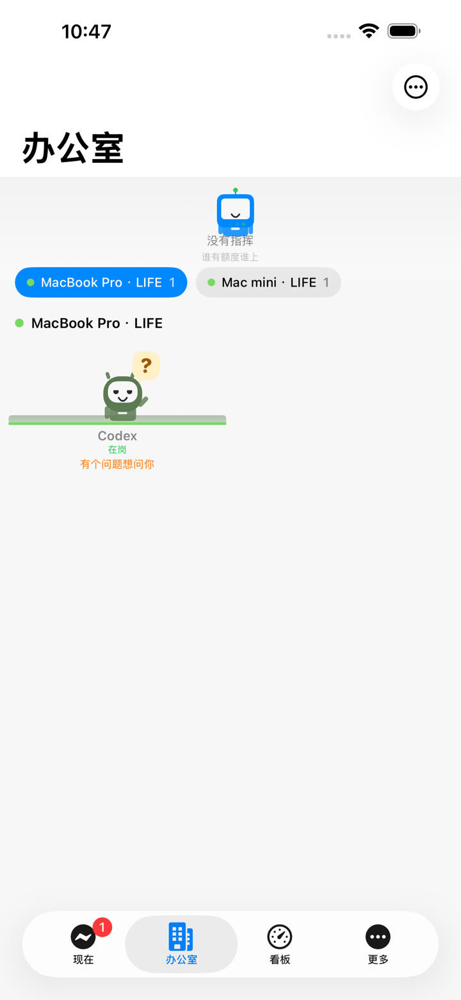
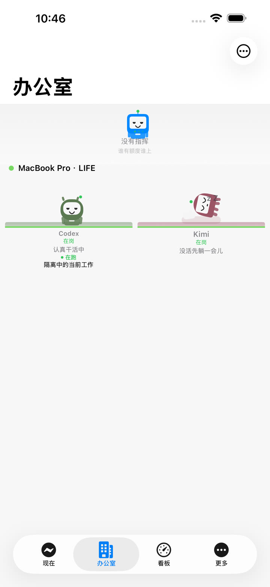
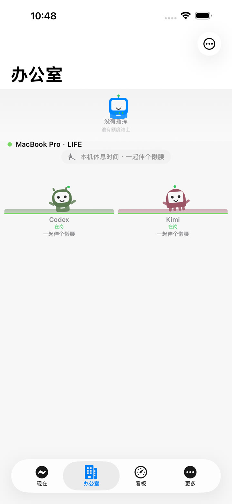
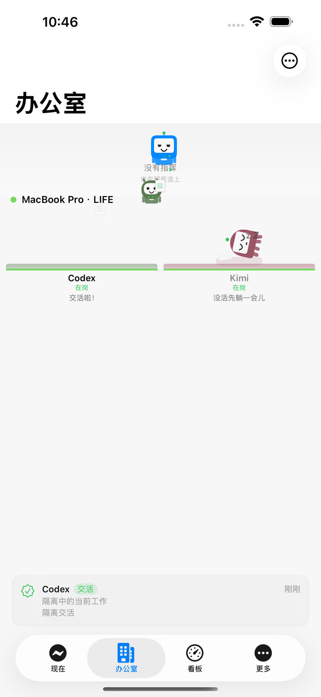
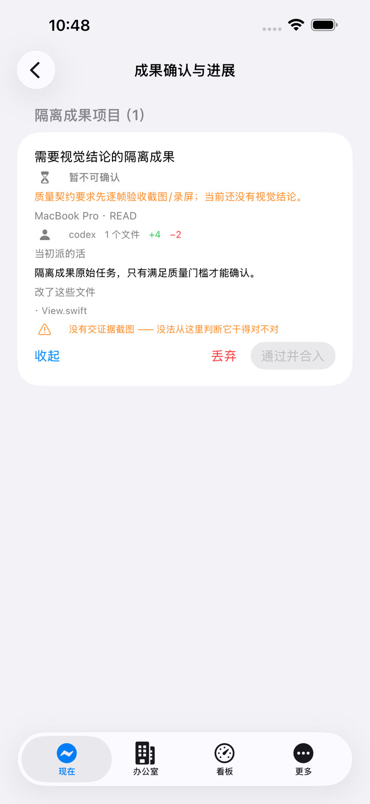
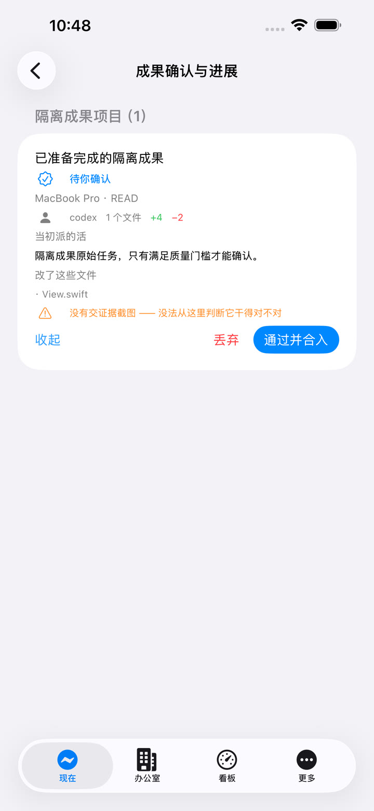
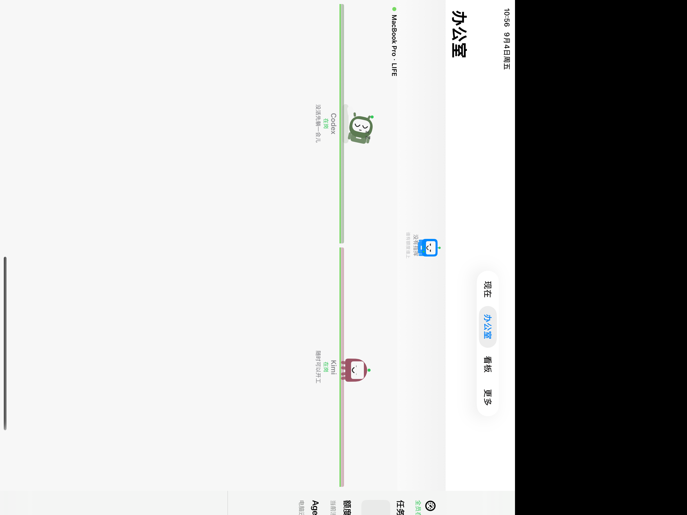

先看哪里正在浪费
按额度窗口和作废风险排序，不必逐个平台打开网页找数字。
下面是应用真实运行画面录屏。打开“现在”看待办，走进“办公室”看谁在忙，再到“看板”追踪进展，最后核对证据并确认成果。
按额度窗口和作废风险排序，不必逐个平台打开网页找数字。
结合额度、平台能力、机器状态和项目上下文挑选执行者。
问题、风险放行和待确认成果进入统一入口；操作有目标机器、版本和幂等保护。
它既能单独作为零服务器的本地用量工具，也能逐层开启跨机汇总和 Agent 调度。每一层都能独立使用。
统一平台口径，显示剩余量、重置时间与空窗浪费；不知道的额度不会编数字。
各 Mac 写自己的快照，通过用户自己的 iCloud 目录同步，本地镜像负责稳定读取。
按剩余额度、冷却状态、执行器能力和项目上下文挑选平台，避免无效重试烧额度。
任务完成前经过测试、证据、评审和版本检查。手机端只有在目标机器、仓库、分支和提交条件吻合时才允许合入；阻断原因直接展示。
任务账本、移动端动作和成果决策都有恢复与幂等设计，进程重启不会把旧结果误当新结果。
卡通形象把真实任务状态翻译成一眼就懂的动作：提问时出现问号，完成后举手，闲久了躺平，全员空闲时一起伸展，新任务到来会立即打断休息。







手机和 Mac 端共用带路由身份、版本和回执的协议，保证动作由正确机器处理。
完整回归使用隔离夹具，不触碰真实任务。移动端分别覆盖 iPhone 与 iPad，并实际跑通 Core → App → Core → 回执链路。
1,429 通过，2 项登录钥匙串测试按隔离规则跳过，0 失败。
108 通过，2 个 iPad 专用条件跳过，0 失败；设备专用项在 iPad 补齐。
109 通过，1 个 iPhone 专用条件跳过，0 失败；宽屏布局与操作区实看通过。
Release 归档、App Store Connect 分发签名、生产 APNs 权限、隐私清单和代码签名均已核验。
Core 没有第三方 Swift Package 依赖。装了哪个平台就采哪个；未配置上限时仍会统计用量，但不会伪造剩余百分比。
git clone https://github.com/scott987-cmd/quotient.git cd quotient swift build -c release # 扫描本机已安装平台并查看汇总 ./.build/release/llmq collect ./.build/release/llmq report # 需要常驻采集时再安装菜单栏 App 与定时任务 ./build-app.sh --install ./.build/release/llmq install-agent
查看源码、安装方法、架构说明和移动端上架状态。